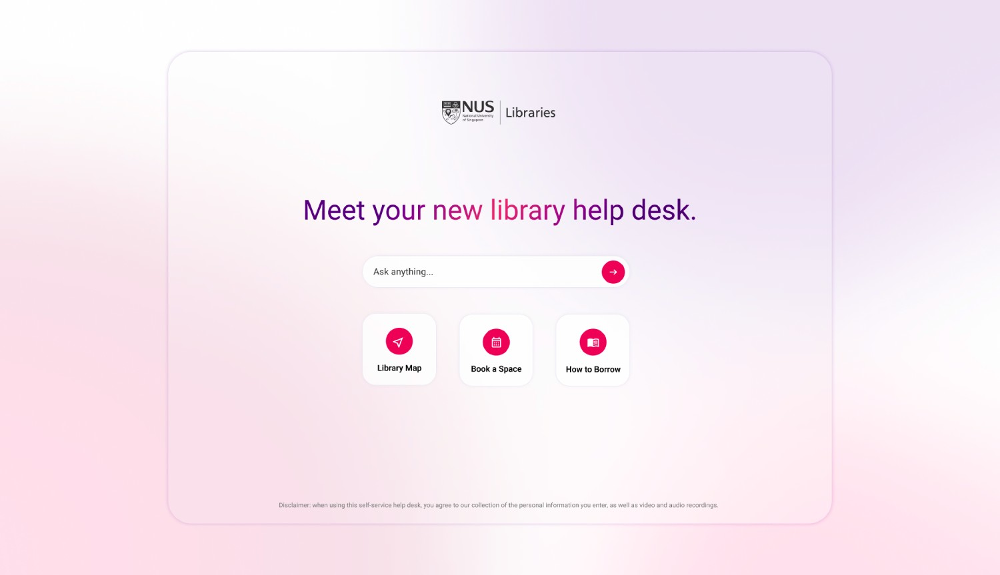
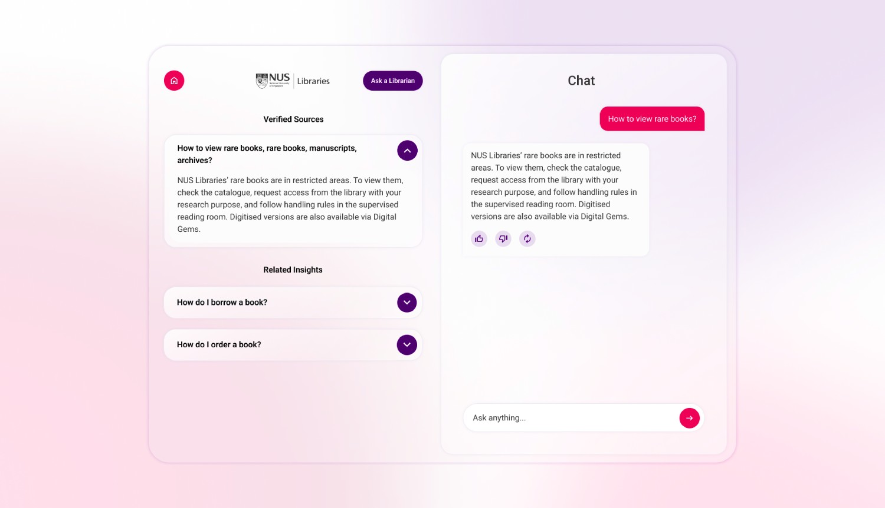

GenAI Library Help Desk
Introduction
Challenge: The goal was to revolutionise the traditional library help desk by designing a generative AI help desk. The core constraint was creating a powerful, conversational AI experience on a public kiosk screen that could resolve a wide range of common library inquiries with minimal typing. The goal was to build a frictionless, touch-first interface that anticipated user intent and provided immediate, relevant answers.
Solution: I designed an AI-powered help desk that anticipates user needs through contextual shortcuts and dynamic search suggestions. The solution prioritises a tap-first interaction model, leveraging existing library data to guide users efficiently, transforming the help desk into an intuitive, self-service information hub.
Looking Forward: The current design is a proof of concept with immense potential. The next phases will integrate a voice-to-text feature and multilingual support to serve the university's diverse international student body. Ultimately, this AI dialogue system is envisioned as a replacement for the traditional library website, where users can conversationally ask for resources, book study spaces, and register for events through a natural, intuitive interface. This project demonstrates how AI can transform information access, making the library a more responsive and intelligent resource for everyone.
Target Audience
- University-level students
- Researchers
- General interested public
Process
Data Gathering: survey, interview
Establishing Requirements: personas, user journey
Prototyping: low-fi prototype, hi-fi prototype
Evaluation: usability testing, focus groups
Colour Palette
Inspired by the NUS Libraries' visual identity, the colour palette blends vibrant raspberry and purple with neutral tones. This creates a cohesive and futuristic aesthetic that perfectly complements the AI-powered interface.
#333333
#E30B5D
#4B006E
#E7DFEB
The Design
Anticipatory Shortcuts
I designed an AI-powered interface that presents dynamic shortcuts for common inquiries, eliminating the need for users to type. A simple tap on a topic like "Library Maps” immediately offers relevant actions, speeding up the help process and minimising friction.
Parallel Dialogue and Results
The interface uses a dual-pane layout, displaying the conversational AI dialogue alongside a curated list of credible search results. Users receive a quick answer while having immediate access to official, authoritative information from the library database for a richer experience.
